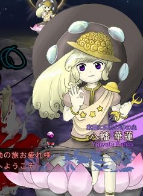
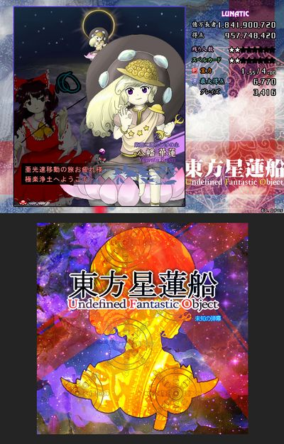

- Welcome to Touhou Wiki!
- Please register to edit. For assistance, check in with our Discord server or IRC channel.
Fan-made characters/Karen Yawata
Karen Yawata | |
|---|---|
|
 Illustration of Karen Yawata from this image from pixiv The Mind of Purification Hidden by Purple Clouds of Good OmenMore Character Titles | |
| Species |
Unknown |
| Abilities |
Unknown |
| Occupation | |
| Location |
Nirvana |
Appearances | |
| Miscellaneous Works | |
Karen Yawata (八幡 華蓮 Karen Yawata) is a fan-made character created by the pixiv user called とってま (Tottema).
General Information[edit]
There's very little information on this character, but it's known that Tottema originally created Karen as the final boss of Undefined Fantastic Object because there was a pixiv project called "Let's imagine bosses of Undefined Fantastic Object", where various artist creates an original character if they were to appear in Undefined Fantastic Object and Karen was the only decent character created in the project. The project ended before the final release of Undefined Fantastic Object. For some reason as of now, her original art has been deleted off pixiv.
Character Basis[edit]
Name[edit]
In her first name Karen, ka (華) means "flower" and ren (蓮) means "a lotus". In her surname, ya (八) means "eight" and wata (幡) means "banner".
Design[edit]
Karen's design is based on Gautama Buddha. She has purple eyes, blonde hair that possibly goes into a curl, and a UFO shaped hat with spirals around it. She wears a plain beige skirt and a pinkish-grey shirt with a buddhist-style collar with a UFO shaped shoulderpad that has a sash decorated with stars that runs around her right shoulder to her left hip. She also has golden arm and ankle braclets and a buddhist halo that resembles a grey UFO on her back. What she's sitting on seem to be a large lotus flower. The similarities between Buddha and Karen is that they both are sitting in a certain position, and both have a Buddhist halo behind them. However, Karen is only cosplaying as Buddha. Her original illustration mimics ZUN's style.
Fanon Culture[edit]
- Comparison: Karen is often compared to other fan-made characters such as Mitori Kawashiro, Sasha Sashiromiya and Rinbokusan Sasaki.
- Resemblance: For some reason in some fanart, Karen bears a striking resemblance to Marisa Kirisame.
- Fanmade theme: An unofficial fanmade theme called "Utopia in Fantastic Orbit ~ The Flower of Starry Nirvana" was made for her by the Youtube user Yuufou.
Official Profile[edit]
とってま description on Pixiv[edit]
<toggledisplay showtext="Show profiles" hidetext="Hide profiles">
|  | 紫雲に隠れし浄の心 八幡 華蓮 Yawata Karen 亜光速移動の旅お疲れ様
東方星蓮船 ～ Undefined Fantastic Object |
The mind of purification hidden by purple clouds of the good omen
Karen Yawata Are you exhausted by travelling at sub-light speeds?
Touhou Seirensen ~ Undefined Fantastic Object |
</toggledisplay> [1]